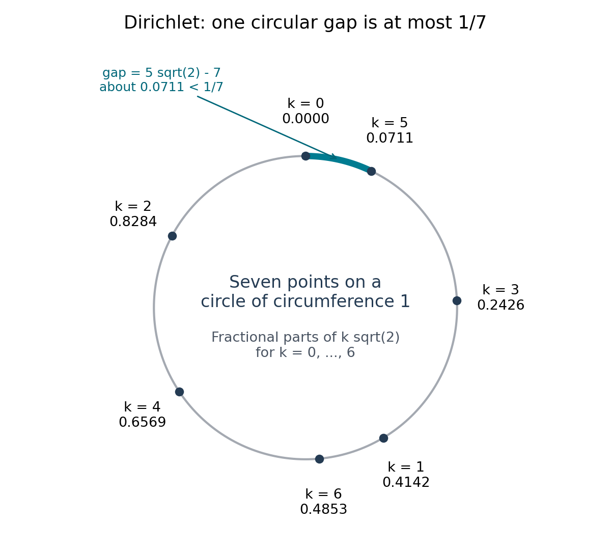

Algebraic and transcendental numbers; Liouville's theorem
Written by GPT-6.1 Sol (OpenAI) in Codex, Ultra setting, October 2026. Self-checked by the writing AI, GPT-6.1 Sol at Ultra. Public domain (CC0).
How close can a rational number get to a specified real number? A small denominator makes an approximation inexpensive; a small error makes it accurate. Algebraic numbers impose a limit on how these two advantages can occur together. The reason is arithmetic: a nonzero integer has absolute value at least one.
We first turn that observation into an explicit bound. We then build numbers that violate every such bound, and compare the resulting exceptional set with what happens for almost every real number. No transcendence theorem is assumed. The prerequisites are finite-dimensional linear algebra, real calculus and elementary Lebesgue measure. The continued-fraction section develops the approximation estimates and proves Euler's expansion of \(e\) before using it in an exercise.
Basic references are Waldschmidt's open notes on Diophantine approximation, irrationality and transcendence, Evertse's lecture notes Diophantine Approximation, Soundararajan's notes Transcendental Number Theory, and Cohn's note on the continued fraction of \(e\). Their roles are, respectively, exponent conventions, continued fractions and comparison with later approximation theorems; the explicit arithmetic bound; Liouville's mean-value argument; and Euler's expansion of \(e\).
1. An integer hidden in an approximation
Take \(\alpha=\sqrt2\). For integers \(p\) and \(q\geq1\),
\[ (p-q\sqrt2)(p+q\sqrt2)=p^2-2q^2\in\mathbb Z\setminus\{0\}. \]If \(|\alpha-p/q|<1\), then \(|\alpha+p/q|<2\sqrt2+1\), so
\[ \left|\sqrt2-\frac pq\right| =\frac{|p^2-2q^2|}{q^2|p/q+\sqrt2|} >\frac1{(2\sqrt2+1)q^2}. \]If the error is at least one, the same lower bound is immediate. This is a bound for every rational approximation, including negative numerators and unreduced fractions. Its constant is explicit. The exponent two will turn out to be sharp.
The argument has two ingredients: a polynomial relation for \(\alpha\), and the nonvanishing of that polynomial at a rational number. We now identify the numbers for which those ingredients are available.
Definition 1.1. Algebraicity and size
A complex number \(\alpha\) is algebraic if \(P(\alpha)=0\) for a nonzero polynomial \(P\in\mathbb Q[X]\). Otherwise it is transcendental. Its monic minimal polynomial in \(\mathbb Q[X]\) is the monic polynomial of least degree vanishing at \(\alpha\). Division with remainder proves that it is irreducible and unique.
Clearing denominators and removing the common divisor of the coefficients gives a unique primitive minimal polynomial
\[ P_\alpha(X)=a_dX^d+\cdots+a_0\in\mathbb Z[X],\qquad a_d>0. \]Here primitive means that the coefficients have greatest common divisor one. The degree of \(\alpha\) is \(d\); its conjugates are the roots of \(P_\alpha\). They are distinct, since an irreducible polynomial in characteristic zero is relatively prime to its derivative. The naive height is
\[ H(\alpha)=\max_{0\leq k\leq d}|a_k|. \]This height depends on the primitive normalization. It is different from the logarithmic Weil height developed in Heights of algebraic numbers.
Proposition 1.2. Finite-dimensional arithmetic
A complex number \(\alpha\) is algebraic if and only if \(\mathbb Q[\alpha]\) is finite-dimensional over \(\mathbb Q\). The algebraic numbers form a subfield \(\overline{\mathbb Q}\) of \(\mathbb C\). Every root in \(\mathbb C\) of a nonzero polynomial with algebraic coefficients is algebraic over \(\mathbb Q\). In particular, \(\overline{\mathbb Q}\) is algebraically closed.
Proof. If \(\alpha\) has minimal polynomial of degree \(d\), division by that polynomial shows that \(1,\alpha,\ldots,\alpha^{d-1}\) span \(\mathbb Q[\alpha]\), and minimality shows that they are independent. Conversely, finite dimension forces a linear dependence among sufficiently many powers of \(\alpha\).
A finite-dimensional subalgebra of a field is a field: for a nonzero element \(u\), multiplication by \(u\) is an injective linear endomorphism, hence surjective; some element therefore maps to one. Thus \(\mathbb Q[\alpha]=\mathbb Q(\alpha)\).
For finitely many algebraic numbers \(\alpha_1,\ldots,\alpha_s\), adjoin them successively. Each still satisfies its polynomial over \(\mathbb Q\), so each step has finite degree. The tower law makes \(\mathbb Q(\alpha_1,\ldots,\alpha_s)\) finite over \(\mathbb Q\). Here the finite tower law follows by taking a basis \((u_i)\) of \(K\) over \(\mathbb Q\) and a basis \((v_j)\) of \(L\) over \(K\): the products \(u_iv_j\) span \(L\), and their independence follows by first collecting the coefficients of each \(v_j\), then those of each \(u_i\). Every element of this field is algebraic by the first part. This proves closure under addition, subtraction, multiplication and division by nonzero elements.
Finally, let \(u\) be a root of a nonzero polynomial whose coefficients lie in \(\overline{\mathbb Q}\). The finitely many coefficients generate a finite extension \(K/\mathbb Q\). The relation makes \(K(u)/K\) finite, hence \(K(u)/\mathbb Q\) finite. Thus \(u\) is algebraic.
To supply the needed complex root existence, let \(P\) be a nonconstant complex polynomial. Since \(|P(z)|\to\infty\) as \(|z|\to\infty\), its modulus has a global minimum at some \(z_0\). If \(P(z_0)=c_0\neq0\), write \(P(z_0+w)=c_0+c_kw^k+O(w^{k+1})\), with \(k\geq1\) the first nonzero higher coefficient. Choose a complex \(u\) with \(c_ku^k/c_0=-1\), using polar coordinates. For small positive \(t\),
\[ |P(z_0+tu)/c_0|\leq1-t^k+Ct^{k+1}<1, \]contradicting minimality. Hence \(P\) has a complex root; division and induction give its full factorization. Applied to polynomials over \(\overline{\mathbb Q}\), the preceding paragraph puts every root in \(\overline{\mathbb Q}\). \(\square\)
The subfield assertion is also [Stacks, Tag 09GI]. The argument here is given independently because it is the algebraic mechanism used throughout the course.
Theorem 1.3. Liouville's explicit obstruction
Let \(\alpha\in\mathbb R\) be algebraic of degree \(d\geq2\). For every \(p\in\mathbb Z\) and \(q\geq1\),
\[ \left|\alpha-\frac pq\right| >\frac1{d^2H(\alpha)(1+|\alpha|)^{d-1}q^d}. \]Proof. Write \(P=P_\alpha\) and \(H=H(\alpha)\). Since \(P\) is irreducible and has degree at least two, it has no rational root. Consequently,
\[ q^dP(p/q)=\sum_{k=0}^d a_kp^kq^{d-k} \]is a nonzero integer, giving \(|P(p/q)|\geq q^{-d}\).
Put \(R=1+|\alpha|>1\). If \(|\alpha-p/q|\geq1\), the proposed right-hand side is at most \(1/d^2<1\), so the result holds. Otherwise the segment between \(\alpha\) and \(p/q\) lies in \((-R,R)\). On that segment,
\[ |P'(t)|\leq H\sum_{k=1}^d k|t|^{k-1} \leq H R^{d-1}\frac{d(d+1)}2 <d^2H R^{d-1}. \]The mean value theorem gives
\[ q^{-d}\leq |P(p/q)-P(\alpha)| <d^2H R^{d-1}|p/q-\alpha|, \]which proves the strict inequality. \(\square\)
Reference: Soundararajan, Theorem 1, proves Liouville's theorem by the same mean-value argument. Evertse, Chapter 6, Theorem 6.1, gives the explicit constant \(2^{1-d}M(\alpha)^{-1}\), where \(M(\alpha)\) is the Mahler measure and a reduced fraction \(p/q\) is measured by \(\max(|p|,q)\).
For \(\sqrt2\), \(P=X^2-2\) and \(H=2\), so this gives \(1/[8(1+\sqrt2)q^2]\). The factorization at the start gives a better constant. For non-real \(\alpha\), every real rational satisfies \(|\alpha-p/q|\geq|\operatorname{Im}\alpha|>0\); approximation on the real line is therefore already separated by a fixed positive distance.
2. Why exponent two is unavoidable
Liouville's theorem excludes very accurate approximations. A complementary argument constructs approximations for every real number.
Theorem 1.4. Dirichlet's finite and infinite forms
For a real \(x\) and an integer \(Q\geq1\), there are integers \(p,q\) with \(1\leq q\leq Q\) such that
\[ |qx-p|\leq\frac1{Q+1}. \]If \(x\) is irrational, the inequality is strict and there are infinitely many distinct reduced rationals \(p/q\) with
\[ 0<|x-p/q|<q^{-2}. \]Proof. Place the \(Q+1\) fractional parts \(\{kx\}\), \(0\leq k\leq Q\), on a circle of circumference one. Coincident points immediately give \(qx-p=0\). Otherwise the \(Q+1\) circular gaps have positive lengths summing to one, so a gap has length at most \(1/(Q+1)\).
The two endpoints of this gap come from indices \(j,k\). Their difference, adjusted by an integer if the gap crosses zero, has the form \(\pm(qx-p)\), where \(q=|j-k|\in\{1,\ldots,Q\}\). This proves the bound.
Equality can hold only if every gap has length \(1/(Q+1)\). Since the set contains zero, it would then consist of the multiples of \(1/(Q+1)\); in particular \(\{x\}\) would be rational. Thus irrational \(x\) gives a strict inequality.
For each \(Q\), divide the bound by \(q\). Since \(q\leq Q\),
\[ |x-p/q|<\frac1{q(Q+1)}<\frac1{q^2}. \]Reducing a fraction can only lower its denominator and preserves this inequality. The resulting reduced denominators are unbounded: otherwise the rationals within distance one of \(x\) would lie in a finite set, whose nonzero distances from \(x\) have a positive minimum, whereas the constructed errors tend to zero as \(Q\to\infty\). \(\square\)

Figure 1. Seven points, seven gaps. For \(x=\sqrt2\) and \(Q=6\), the highlighted gap gives \(|5\sqrt2-7|\approx0.0711<1/7\). The plotted coordinates are numerical; the circle-gap argument above is exact.
Editable vector figure.
The non-strict sign in the finite form is necessary: \(x=1/2\), \(Q=1\) gives error exactly \(1/2\). Combining Dirichlet with Theorem 1.3 shows that a real quadratic irrational can be approximated to order \(q^{-2}\) infinitely often, but never with arbitrarily small multiples of that order. Such numbers are badly approximable.
3. Constructing numbers with no algebraic obstruction
Definition 1.5. Liouville numbers
A real irrational \(x\) is a Liouville number if, for every positive integer \(n\), some integers \(p,q\) with \(q\geq2\) satisfy
\[ 0<|x-p/q|<q^{-n}. \]Equivalently, for each fixed \(n\) there are infinitely many distinct reduced fractions satisfying this inequality. To see this, apply the definition with exponents tending to infinity. For bounded reduced denominators, only finitely many fractions lie within distance one of \(x\), and their positive errors cannot tend to zero. Reduction preserves the upper bound. A reduced denominator one cannot persist either, since \(x\) has positive distance from the nearest integer.
The explicit irrationality requirement can also be omitted: if \(x=A/B\) is rational in lowest terms and \(p/q\neq x\), then \(|x-p/q|\geq1/(Bq)\). For \(n\) large enough that \(2^{n-1}\geq B\), no \(q\geq2\) can meet the defining inequality.
Proposition 1.6. The factorial construction
For every integer base \(b\geq2\), the number
\[ L_b=\sum_{n=1}^{\infty}b^{-n!} \]is a Liouville number, hence transcendental.
Proof. For \(j\geq2\), let
\[ q_j=b^{j!},\qquad p_j=q_j\sum_{n=1}^j b^{-n!}\in\mathbb Z. \]The tail is positive. The exponents after \((j+1)!\) increase by at least one, and many integers are skipped, so
\[ 0<L_b-p_j/q_j <\frac{b^{-(j+1)!}}{1-b^{-1}} \leq2q_j^{-(j+1)}. \]If \(L_b=A/B\) were rational, its positive distance from the distinct truncation would be at least \(1/(Bq_j)\), contradicting this estimate for large \(j\). Thus \(L_b\) is irrational. For a prescribed \(n\), choose \(j\) so large that \(j+1>n\) and \(2<q_j^{j+1-n}\). This gives the Liouville inequality.
Finally, an algebraic irrational of degree \(d\) would satisfy Theorem 1.3 with a positive fixed constant. The tail estimates with arbitrarily large exponents contradict that lower bound. \(\square\)
This proves the familiar decimal example \(L_{10}=0.110001000000000000000001\ldots\), and the binary example \(L_2\). It also makes clear why long runs of zero digits are useful: the next nonzero digit can be put much farther away than the denominator of the preceding truncation suggests.
4. Exponents, constants and typical numbers
Definition 1.7. Irrationality exponent
For irrational \(x\in\mathbb R\), define
\[ \mu(x)=\sup\{u\in\mathbb R:|x-p/q|<q^{-u} \text{ for infinitely many distinct reduced }p/q\}. \]It is also the infimum of the numbers \(u\) for which there exists a constant \(c>0\) satisfying
\[ |x-p/q|>c q^{-u}\qquad(p\in\mathbb Z,\ q\geq1). \]Proof of equivalence. If \(u>\mu(x)\), there are only finitely many reduced fractions violating \(|x-p/q|\geq q^{-u}\). Their errors are nonzero. Choose \(c\) smaller than one and smaller than each of their error-times-\(q^u\) values. This gives the strict lower bound for all reduced fractions. Since \(u>\mu(x)\geq2\), unreduced denominators only decrease its right-hand side.
Conversely, a uniform lower bound with exponent \(u\) rules out infinitely many approximations of any exponent \(v>u\), because \(q^{-v}<c q^{-u}\) for all large \(q\). Thus \(\mu(x)\leq u\). Taking the appropriate infimum proves the claim. \(\square\)
The infimum need not be attained. A number can have \(\mu(x)=2\) without being badly approximable. An effective irrationality measure additionally provides a computable positive lower-bound constant; its infimum is the effective irrationality exponent. A proof of finiteness of exceptions does not by itself compute that constant.
Theorem 1.8. The universal and metric exponents
Every irrational real number satisfies \(\mu(x)\geq2\), and \(\mu(x)=2\) for Lebesgue-almost every real number. For a real algebraic irrational of degree \(d\), \(\mu(x)\leq d\). For a real quadratic irrational, \(\mu(x)=2\), with an effective lower bound at exponent two. Liouville numbers have \(\mu(x)=\infty\).
Proof. Dirichlet gives the universal lower bound. Liouville gives the algebraic upper bound, and the quadratic conclusion follows by combining them. Definition 1.5 is exactly the condition that the supremum be infinite.
For the metric statement, fix \(u>2\) and an interval \([-B,B]\), with \(B\geq1\). At denominator \(q\), the intervals
\[ (p/q-q^{-u},p/q+q^{-u}) \]that meet \([-B,B]\) have at most \(2(B+1)q+1\) relevant numerators. Their total length is at most \(C_Bq^{1-u}\), for a constant \(C_B\) independent of \(q\). The sum over \(q\) converges. For every \(N\), the points belonging to infinitely many of these intervals lie in their union over \(q\geq N\), whose measure is at most \(C_B\sum_{q\geq N}q^{1-u}\to0\). This is the elementary Borel-Cantelli argument.
Apply it for \(u=2+1/k\), \(k=1,2,\ldots\), and for integral \(B\). Outside a countable union of null sets, \(\mu(x)\leq2\). Remove the countable rational set and apply Dirichlet to get equality. \(\square\)
For \(\alpha=\sqrt[3]2\), the following table separates proved results from later or cited ones. Each upper bound means a uniform positive constant is allowed.
| Result | Permitted lower-bound exponent | Status here |
|---|---|---|
| Liouville | \(3\) | Proved in Theorem 1.3, with an explicit constant |
| Thue | \(5/2+\varepsilon\), for every \(\varepsilon>0\) | Follows from the later Roth theorem; historical statements in Waldschmidt, §4.1.3, Theorem 42, and Evertse, Chapter 6, §6.1 |
| Roth | \(2+\varepsilon\), for every \(\varepsilon>0\) | Proved later in Rational approximation to algebraic numbers III: Roth's theorem and its consequences |
Thue's and Roth's statements do not provide an effective lower-bound constant by the arguments developed later. The later course on linear forms in logarithms develops effective improvements. None of these statements replaces \(2+\varepsilon\) by a guaranteed uniform exponent-two bound for a cubic irrational.
Theorem 1.9. Existence and the size of the exceptional set
The algebraic numbers are countable. The transcendental real numbers form an uncountable set of full Lebesgue measure. The Liouville numbers form a dense \(G_\delta\) subset of \(\mathbb R\) of measure zero.
Proof. For each degree bound, integer polynomials correspond to finite tuples of integers, a countable set. A countable union over degree is still countable. Each nonzero polynomial has finitely many roots, so their union, \(\overline{\mathbb Q}\), is countable. Each singleton has measure zero; countable subadditivity makes the algebraic real numbers a null set. Since \(\mathbb R\) is uncountable, their complement is uncountable and has full measure.
For the topology of Liouville numbers, set
\[ U_{n,N}=\bigcup_{q\geq N}\ \bigcup_{p\in\mathbb Z} (p/q-q^{-n},p/q+q^{-n}),\qquad n\geq1,\ N\geq2. \]These sets are open. They are dense because rationals with denominators \(q\geq N\), allowing unreduced representations, are dense. The set of irrationals is also a countable intersection of open dense sets: \(\mathbb R\setminus\mathbb Q=\bigcap_{r\in\mathbb Q}(\mathbb R\setminus\{r\})\). Hence
\[ \mathcal L=(\mathbb R\setminus\mathbb Q)\cap \bigcap_{n\geq1,N\geq2}U_{n,N} \]is a \(G_\delta\). Here is the completeness argument proving density. List all the open dense sets occurring in the intersection as \(V_1,V_2,\ldots\). Inside any prescribed nonempty open interval, choose a closed interval \(I_1\) of positive length contained in \(V_1\). Having chosen \(I_n\), choose a closed interval \(I_{n+1}\) of positive length inside \(\operatorname{int}(I_n)\cap V_{n+1}\), with length at most \(2^{-n}\). Density and openness permit each choice. Completeness of \(\mathbb R\) gives a point in all the nested closed intervals. It belongs to every \(V_n\) and to the initial interval. This proves density, the real-line form of Baire's argument.
The equality with \(\mathcal L\) follows from Definition 1.5 and its infinite-approximation form. Indeed, membership gives arbitrarily large denominators; for an irrational, bounded reduced denominators cannot realize errors tending to zero.
Every Liouville number has infinitely many approximations of exponent three. The convergent-tail measure argument in Theorem 1.8, with \(u=3\), shows that this set is null on every bounded interval, hence on \(\mathbb R\). \(\square\)
There is no conflict between density and measure zero, or between being a dense \(G_\delta\) and having measure zero. Measure and Baire category test different notions of smallness. Algebraic numbers are countable; Liouville numbers are much larger but still null.
5. Continued fractions as an approximation microscope
This section supplies a way to recognize large irrationality exponents without using digit expansions. Write an infinite simple continued fraction as
\[ x=[a_0;a_1,a_2,\ldots],\qquad a_0\in\mathbb Z,\quad a_j\in\mathbb Z_{>0}\ (j\geq1). \]Its convergents \(p_n/q_n=[a_0;\ldots,a_n]\) satisfy
\[ p_{-1}=1,\ p_0=a_0,\quad q_{-1}=0,\ q_0=1, \qquad p_n=a_np_{n-1}+p_{n-2},\quad q_n=a_nq_{n-1}+q_{n-2}. \]The recurrence follows by composing the fractional-linear maps \(t\mapsto a_j+1/t\). Taking determinants gives
\[ p_nq_{n-1}-p_{n-1}q_n=(-1)^{n-1}. \]Thus adjacent convergents differ by \(1/(q_nq_{n-1})\), in alternating directions. The denominators grow at least as fast as Fibonacci numbers after the initial indices; the successive differences are summable, so the convergents have a limit. The complete tail \(t_{n+1}=[a_{n+1};a_{n+2},\ldots]\) lies strictly between \(a_{n+1}\) and \(a_{n+1}+1\), and the same fractional-linear identity gives
\[ x=\frac{p_nt_{n+1}+p_{n-1}}{q_nt_{n+1}+q_{n-1}},\qquad \left|x-\frac{p_n}{q_n}\right| =\frac1{q_n(q_nt_{n+1}+q_{n-1})}. \]In particular,
\[ \frac1{(a_{n+1}+2)q_n^2} <\left|x-\frac{p_n}{q_n}\right| <\frac1{a_{n+1}q_n^2}. \]These formulas also prove that the limit is irrational. If it were a fixed rational \(A/B\), a distinct convergent would have error at least \(1/(Bq_n)\), contradicting the upper bound for arbitrarily large \(q_n\). No convergent equals the limit, by the displayed exact formula.
Lemma 1.10. Controlling all rational approximations
Put \(\epsilon_n=q_nx-p_n\). If \(0<q<q_{n+1}\), then for every integer \(p\),
\[ |qx-p|\geq|\epsilon_n|. \]Consequently, if \(q_n\leq q<q_{n+1}\),
\[ |x-p/q|>\frac1{(a_{n+1}+2)q^2}. \]Proof. The determinant of the integer column vectors \((p_n,q_n)\) and \((p_{n+1},q_{n+1})\) is \(\pm1\). Express \((p,q)\) uniquely as an integer combination with coefficients \(a,b\). If \(b=0\), positivity of \(q\) forces \(a\geq1\), and the first inequality follows. If \(b\geq1\), the condition \(q<q_{n+1}\) forces \(a\leq-1\); if \(b\leq-1\), positivity of \(q\) forces \(a\geq1\). Since \(\epsilon_n\) and \(\epsilon_{n+1}\) have opposite signs, in either remaining case the summands in \(a\epsilon_n+b\epsilon_{n+1}\) have the same sign and its magnitude is at least \(|\epsilon_n|\).
The exact error formula gives
\[ |\epsilon_n|>\frac1{q_n+q_{n+1}}. \]Divide by \(q\), use \(q_{n+1}=a_{n+1}q_n+q_{n-1}\) and \(q_{n-1}\leq q_n\leq q\), and obtain the second inequality. Initial repeated denominators can be bypassed by taking \(n\geq1\); finitely many small \(q\) never affect an irrationality exponent. \(\square\)
If \(a_{n+1}\geq q_n^n\) for all sufficiently large \(n\), the convergent upper bound is smaller than \(q_n^{-n-2}\). The number is Liouville. Conversely, if for every \(\eta>0\) one has \(a_{n+1}+2\leq q_n^\eta\) for all sufficiently large \(n\), Lemma 1.10 gives \(\mu(x)\leq2+\eta\). Dirichlet then gives \(\mu(x)=2\). This distinction explains why unbounded partial quotients alone do not imply a large irrationality exponent.
Theorem 1.11. Euler's exponential example
The continued fraction of \(e\) is
\[ e=[2;1,2,1,1,4,1,1,6,1,\ldots],\qquad a_{3k-2}=a_{3k}=1,\quad a_{3k-1}=2k\quad(k\geq1). \]Proof. We first identify a simpler fraction. For \(n\geq0\), put
\[ A_n=\frac1{n!}\int_0^1x^n(1-x)^ne^x\,dx,\qquad B_n=\frac1{n!}\int_0^1x^{n+1}(1-x)^ne^x\,dx. \]They are positive, and \(0<A_{n+1}/A_n\leq1/[4(n+1)]<1\). The bound follows by multiplying the integrand by \(x(1-x)/(n+1)\leq1/[4(n+1)]\).
For \(n\geq1\), integrate the derivatives of \(x^n(1-x)^n/n!\) and \(x^{n+1}(1-x)^n/n!\) against \(e^x\). Their boundary terms vanish. The first derivative is \((1-2x)x^{n-1}(1-x)^{n-1}/(n-1)!\), giving
\[ A_n+A_{n-1}=2B_{n-1}. \]For the second derivative, use
\[ \frac{d}{dx}\frac{x^{n+1}(1-x)^n}{n!} =(n+1)\frac{x^n(1-x)^n}{n!} -\frac{x^{n+1}(1-x)^{n-1}}{(n-1)!}. \]The last integral is \(B_{n-1}-nA_n\), because \(x^2=x-x(1-x)\). Integration by parts therefore gives \((2n+1)A_n=B_{n-1}-B_n\). Eliminate the \(B\)'s to obtain
\[ A_{n-1}=(4n+2)A_n+A_{n+1}\qquad(n\geq1). \]Direct integration gives \(A_0=e-1\), \(B_0=1\), and \(A_1=3-e\). Consequently
\[ \frac{e+1}{e-1}=2+\frac{A_1}{A_0},\qquad \frac{A_{n-1}}{A_n}=4n+2+\frac{A_{n+1}}{A_n}. \]Every last quotient lies strictly between zero and one. These are exactly the successive integer parts and remainders of the simple continued-fraction algorithm. Hence
\[ t:=\frac{e+1}{e-1}=[2;6,10,14,\ldots]. \]Let \(r_n/s_n\) be its convergents. Thus \(r_0=2,s_0=1\), \(r_1=13,s_1=6\), and for \(n\geq2\) each sequence satisfies \(u_n=(4n+2)u_{n-1}+u_{n-2}\).
Let \(E\) be the limit of the continued fraction asserted for \(e\), and let its convergent numerators and denominators be \(P_j,Q_j\). For either sequence \(u_j=P_j\) or \(u_j=Q_j\), its recurrence over the next three digits \(2n,1,1\) gives
\[ u_{3n+1}=(4n+1)u_{3n-2}+2u_{3n-3}. \]The two preceding digits equal one, so \(2u_{3n-3}=u_{3n-2}+u_{3n-5}\). The subsequences \(u_{3n+1}\) therefore satisfy the same recurrence \(U_n=(4n+2)U_{n-1}+U_{n-2}\) for \(n\geq2\). Their initial values are \(P_1=3,Q_1=1,P_4=19,Q_4=7\). They agree with \(r_n+s_n\) and \(r_n-s_n\), respectively. Uniqueness of a sequence from its two initial values and recurrence gives
\[ \frac{P_{3n+1}}{Q_{3n+1}}=\frac{r_n+s_n}{r_n-s_n}. \]Pass to the limit. Since \(t>1\),
\[ E=\frac{t+1}{t-1}=e. \]This proves the expansion. \(\square\)
Reference: Cohn proves Euler's expansion with integrals of the same kind. Waldschmidt, Course 12, §7.1, derives the expansion of \((e+1)/(e-1)\) and passes to Euler's expansion of \(e\) by the same elimination of convergent indices.
6. Exercises
-
Easy — a binary construction. For \(L_2=\sum_{n\geq1}2^{-n!}\), exhibit integer numerators and denominators, a positive tail bound, and approximations of every prescribed exponent. Prove irrationality before applying Liouville's theorem.
-
Easy — a sharper quadratic constant. Show that, for every \(p\in\mathbb Z\) and \(q\geq1\), \(|\sqrt3-p/q|>1/[(2\sqrt3+1)q^2]\). Compare this with the bound from the naive height.
-
Medium — continuously many choices. For each sequence \((c_n)_{n\geq2}\in\{1,2\}^{\mathbb N}\), let \(x_c=\sum_{n\geq2}c_n10^{-n!}\). Prove that every \(x_c\) is Liouville and that different sequences give different numbers. Deduce that the Liouville set has the cardinality of \(\mathbb R\).
-
Medium — rational affine changes. If \(x\) is Liouville, \(r\in\mathbb Q\setminus\{0\}\) and \(s\in\mathbb Q\), prove that \(rx+s\) is Liouville. Use this to give a density proof independent of Baire's theorem.
-
Medium — a metric proof. For a fixed bounded interval, estimate the measure of the points admitting infinitely many approximations with error less than \(q^{-2-\eta}\). Then deduce \(\mu(x)=2\) almost everywhere. Explain why a countable family of \(\eta\)'s suffices.
-
Hard — the exponent of \(e\). Use Euler's expansion proved in Theorem 1.11:
Prove that \(\mu(e)=2\). Your argument must bound all rational approximations, not just the convergents.
7. Solutions
1. Take \(q_j=2^{j!}\) and \(p_j=\sum_{n=1}^j2^{j!-n!}\). Proposition 1.6 gives \(0<L_2-p_j/q_j<2q_j^{-j-1}\). If \(L_2=A/B\), the positive error is at least \(1/(Bq_j)\), a contradiction as \(j\to\infty\). For a target exponent \(u\), choose \(j+1>u\) and \(q_j^{j+1-u}>2\). This yields \(0<L_2-p_j/q_j<q_j^{-u}\), so \(L_2\) is Liouville and transcendental. The last summand in \(p_j\) is one and the others are even for \(j\geq2\), so these fractions are already reduced.
2. The integer \(p^2-3q^2\) is nonzero. If the error is less than one, \(|p/q+\sqrt3|<2\sqrt3+1\), and factorization gives the asserted strict bound. Otherwise the right-hand side is less than one. The minimal polynomial \(X^2-3\) has height three, so Theorem 1.3 gives the weaker constant \(1/[12(1+\sqrt3)]\).
3. The truncation with denominator \(10^{j!}\) has positive error smaller than \(4\cdot10^{-(j+1)!}\), by summing a geometric upper bound for the remaining digits. The argument in Proposition 1.6 first excludes rationality and then yields every exponent. If two sequences first differ at index \(k\geq2\), their first differing contribution has magnitude \(10^{-k!}\), while the sum of all later possible differences is smaller than \(2\cdot10^{-(k+1)!}<10^{-k!}\). They cannot cancel. Thus the map from binary sequences is injective. Binary sequences have cardinality continuum, and \(\mathcal L\subset\mathbb R\), proving the claim.
4. Choose integers \(a,b,c\), \(b\geq1\), \(a\neq0\), with \(r=a/b\) and \(s=c/b\). For an approximation \(p/q\) to \(x\), approximate \(rx+s\) by \((ap+cq)/(bq)\). The new error is \((|a|/b)|x-p/q|\). Its reduced denominator \(Q\) is at most \(bq\). For a target exponent \(n\), use infinitely many approximations to \(x\) of exponent \(n+1\). For large \(q\),
\[ \frac{|a|}{b}q^{-n-1}<b^{-n}q^{-n}\leq Q^{-n}. \]The transformed number is irrational: otherwise solving the affine equation would make \(x\) rational. Its approximating reduced denominators are unbounded, so eventually \(Q\geq2\). This proves the claim. Fix one Liouville number, for example \(L_{10}\); its rational translates form a dense set of Liouville numbers because \(\mathbb Q\) is dense.
5. In \([-B,B]\), for each \(q\) there are \(O_B(q)\) numerators whose intervals of radius \(q^{-2-\eta}\) meet the interval. The total measure over denominators \(q\geq N\) is \(O_B(\sum_{q\geq N}q^{-1-\eta})\), tending to zero. The limsup set is contained in every such tail union and is null. Apply this for \(\eta=1/k\) and for \(B\in\mathbb N\); both operations are countable. If \(\mu(x)>2\), then \(\mu(x)>2+1/k\) for some \(k\), so \(x\) lies in one of the null exceptional sets. Outside them and the rational set, Dirichlet gives equality.
6. Euler's formula gives \(a_{n+1}\leq2(n+1)\). The recurrence implies \(q_{n+2}\geq2q_n\), hence \(q_n\geq2^{(n-1)/2}\) for \(n\geq1\). Therefore, for every \(\eta>0\), eventually \(2(n+1)+2\leq q_n^\eta\). Given a large denominator \(q\), choose \(n\) with \(q_n\leq q<q_{n+1}\). Lemma 1.10 yields
\[ |e-p/q|>\frac1{(a_{n+1}+2)q^2} \geq\frac1{q_n^\eta q^2}\geq q^{-2-\eta}. \]Thus \(\mu(e)\leq2+\eta\) for every \(\eta>0\), while Dirichlet gives \(\mu(e)\geq2\). The linear growth of the partial quotients causes no increase in the exponent because the denominators grow exponentially.
What this lesson does not prove
Thue's and Roth's approximation theorems orient the exponent comparison. The complete proof for every real algebraic irrational and every positive \(\varepsilon\) is Roth's theorem and its consequences, Theorem 12.1. Roth's bound implies the weaker Thue exponent because \(d/2+1>2\) for \(d\ge3\). The explicit Liouville bound, field arguments, complex root existence, topology and measure arguments, and continued-fraction results used here, including Euler's expansion, are proved in this lesson.
References
- Waldschmidt. M. Waldschmidt, Diophantine approximation, irrationality and transcendence, IMPA course notes, Course 4 (2010), §4.1.2 on quadratic bounds and §4.1.3, Theorem 42 on Thue's exponent. Open notes.
- Stacks. The Stacks project, Fields, Tag 09GI, algebraic elements form a subextension. Official theorem. The AI Integrated Stacks Project is an edition with AI-proposed corrections and AI-written additions, not reviewed by the Stacks project's maintainers; it retains the same tags. AI Integrated Stacks Project, algebraic elements.
- Evertse. J.-H. Evertse, Diophantine Approximation, Chapter 6: Approximation of algebraic numbers by rationals, Leiden course notes, §6.1, Theorem 6.1 and its explicit constant, and the exponents of Thue, Siegel, Gel'fond and Dyson, and Roth.
- Soundararajan. K. Soundararajan, Transcendental Number Theory, Math 249A course notes, Stanford University, Fall 2010, written up by I. Petrow, §1, Theorems 1–4: the theorems of Liouville, Thue, Roth and Dirichlet.
- Cohn. H. Cohn, A short proof of the simple continued fraction expansion of e, arXiv:math/0601660v3, 2006, also in American Mathematical Monthly 113 (2006): Euler's expansion of \(e\) by a variant of Hermite's integral method.
- Waldschmidt, continued fractions. M. Waldschmidt, Diophantine approximation, irrationality and transcendence, IMPA course notes (2010): Course 5, §6.2, and Course 8, §6.4, on simple continued fractions and best approximations; Course 12, §7.1, on the continued fractions of \((e+1)/(e-1)\) and \(e\). Course 5, Course 8, Course 12.